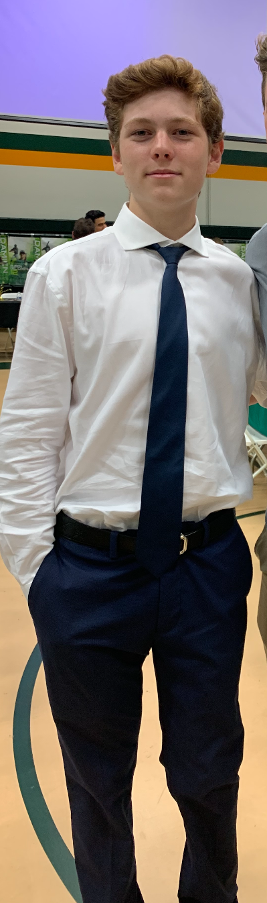

Hello, my name is Cooper Snell. I am an only child with a family of four, including my father, mother, and dog. When I was younger I attended Saint Mark's, which is a prep school. I attended Saint Mark's from preschool all the way through eigth grade. Saint Mark's was a catholic school that taught us important values about life, religion, and leadership. They also taught us life skills that would be important later on. My favorite activities include spending time with family and friends, playing baseball, and videogames. One of my favorite things I like to eat is pasta, burgers, and steak. Some things that I do not like are tests, homework, and running. My favorite hobby is working for Heroes and Patriots, I help feed veterans and their families on holidays and give toys to the children who normally do not receive anything. My favorite type of music is rap, and I can listen to it all day. The only music that I don't like is country. I have a fear of heights, which ruins a lot of experiences for me, such as rollercoasters or riding on planes. My dream job is to follow in my fathers footsteps and become a successful business man one day. To contact me email me at CDSnell22@damien-hs.edu
